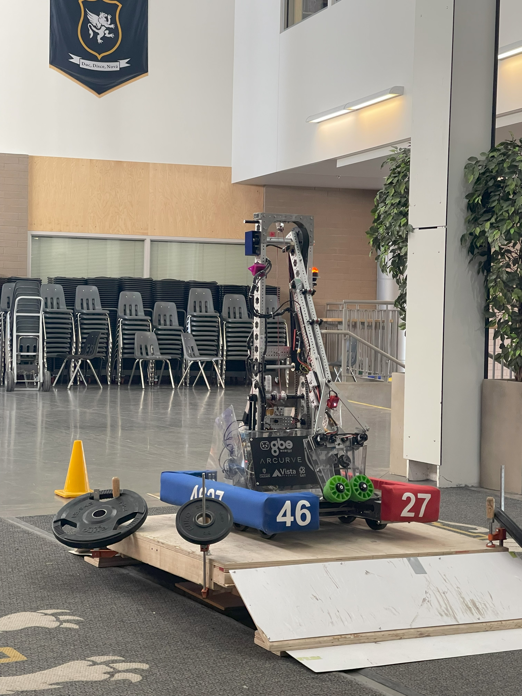

Project Timeline

Jan 2023

Jul 2023
Computer Engineering Student
Exploring the intersection of hardware and software to build the future.
Hi! I'm Paria, a passionate computer engineering student with a love for embedded systems, futuristic tech, and creative problem-solving. I thrive on building things that bridge the digital and physical worlds.